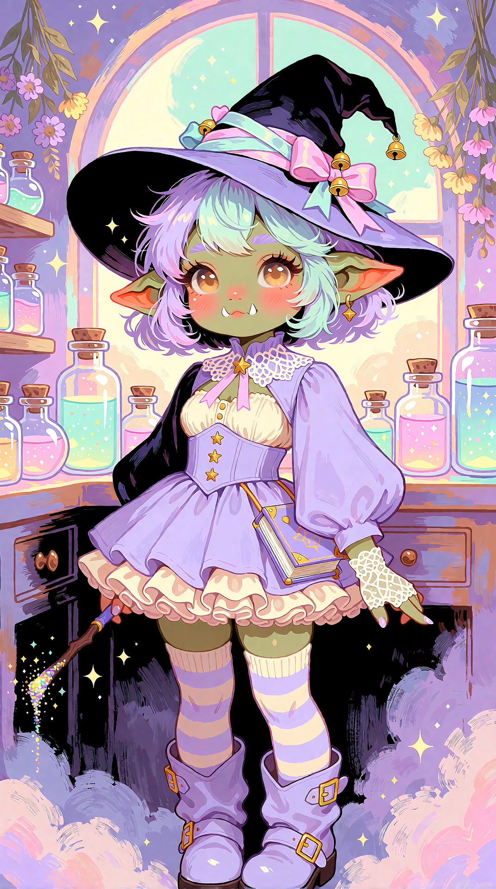
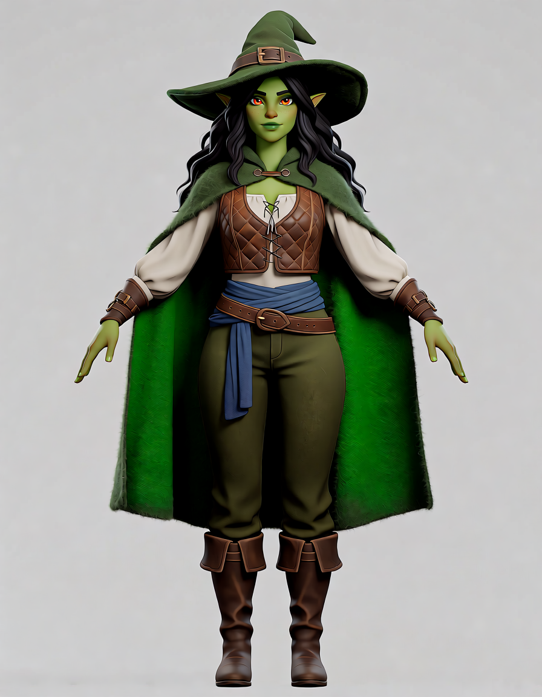
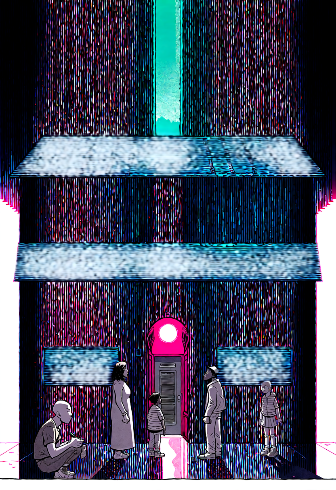
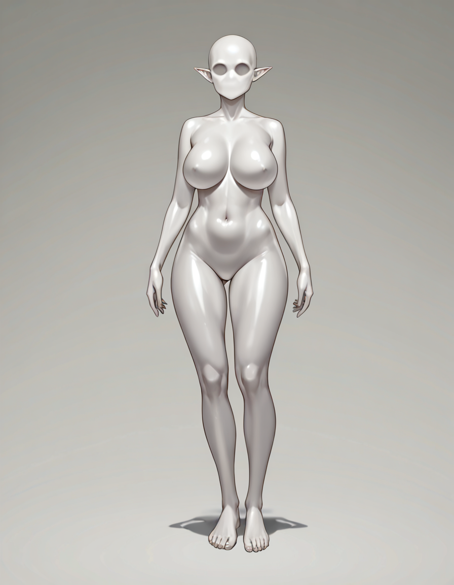

Pictured 1.0 walkthrough. Gates still open.
Doc 54 required T1–T6 green and grade S before this document. They are not. This is the peer-review record of what the live cockpit actually does, with pictures from this machine, and an honest list of what still blocks ship.
Verdict
Live T2I works. That is not S. Owner 2026-09-09 evening: every page × every family needs dest stills/video. T1–T6 plus the holes below are 1.0. Do not ship.
| Gate | State | Evidence |
|---|---|---|
| Grade S | OPEN | T2I, I2I, Wan T2V, Wan I2V-following, LTX T2V, Character, Comic, Concept, Dataset dests pictured. Owner: every page × every family, or S is impossible. T1–T6 still not green. |
| T1 Train | PARTIAL | Family combo + last Dataset folder + hardware rank/batch. Advanced reveals rank/batch in place. Still a Sohya launcher — not an in-app trainer. Dual-PC fail-closed. |
| T2 Drop | PARTIAL | Dialog lists missing nodes + models; keys + create URLs. Not drop-proven on owner workflows. |
| T3 Models | NOT GREEN | Rebuild cache + local example image. Need D&D download + metadata display names. |
| T4 Opts | PARTIAL | krea2 T2I cold A/B: sage 120.72s vs SDPA 124.01s (same seed/size/steps). Sage ~3% on this image job. Wan unopt not timed. LTX sage used, not vs unopt. |
| T5 Defaults | PARTIAL | krea2 raw 52/3.5 vs turbo 8/1.0 in table. Simple must auto-pick; Advanced sets then allows change. |
| T6 Dual-PC | NOT GREEN | Worker list tracer. Need opt-in checkboxes, node download, consent-mounted share in Settings. |
| T7 Walkthrough | THIS FILE | Pictures exist. Ship claim is forbidden until the rows above are green. |
Owner T7 holes — now 1.0
Read of this walkthrough, 2026-09-09 evening. Locked in Doc 54. None of these are green.
- S evidence: every page × every family, dest still or video in this file. T2I/I2I/Wan T2V/Wan I2V-following/LTX T2V/Character/Comic/Concept/Dataset pictured. T1–T6 still open.
- T4: krea2 T2I cold A/B pictured (sage 120.72s / SDPA 124.01s). Wan unopt still open.
- Dataset: robust settings so the user does not tweak the backend.
- T2: live-drop owner’s real workflows.
- T5: Simple auto-applies family + variant (Krea 2 Raw ≠ Turbo). Advanced sets the same defaults, then allows change.
- T1: family + last Dataset folder + hardware rank/batch. Still a launcher, not an in-app trainer.
- T3: drag-and-drop download. Metadata display name, file name unchanged.
- T6: Dual-PC / dual-GPU checkboxes that disclose a node download. Share mounted only with consent. Path in Settings.
- Comic: text bubbles drive the story.
Grade S — live cockpit
The product promise is intent in, stills/clips out, without a node graph. T2I, I2I, Wan T2V dests exist. Wan I2V with i2v experts follows the keyframe. LTX T2V dest exists (Gemma combo name + video VAE). Character concept dest exists (krea2 turbo + qwen3vl). Comic panel dest exists. Concept reference dest exists. Dataset dest exists (krea2 52-step, golden-hour landscape). That is not a ship certificate — T1–T6 are not green.


plate_queue_37261cc92275.png but experts were wan2.2_t2v_* not wan2.2_i2v_*. Frame-0 MAE 79.13 vs proven i2v ~5.19. Prompt-only photoreal woman. Fail-closed in worker native_video_graphs.py after this find.wan2.2_i2v_* + umt5. Frame-0 is the goblin witch, center-crop MAE 9.25 (prior t2v-on-i2v was 79.13). 379.61s.comfy_gemma_3_12B_it.safetensors (combo name, not a D: path) + ltx\LTX23_video_vae_bf16 (not audio). 832×480 · 81f @ 16 fps · 73.31s. Graph 400 from absolute Gemma path is closed (1acdcf8). Frame 0 is two people in floodwater, not the paper-boat prompt — dest exists; prompt-adherence is not S evidence.
qwen3vl_4b_fp8_scaled + qwen_image_vae · 896×1152 · 82.21s. First Generate after LTX hung 10 min on UNETLoader; next failed missing unet_raw, text_encoder because extra_model_paths.yaml was D:-only while the UNET lives on F:. Closed 03321ff. Green orc witch, A-pose, matches the concept prompt.
481f6f7. Sample script was placeholder-only so Split/Generate no-op'd until a real beat was typed. Dest exists; rain/neon comic still, not a clean alley establishing shot.
ee8c66f. Four jobs queued; first dest is a golden-hour lake, prompt-adherent. Writes under dest/images/, not a named project folder.- This T2I run: Busy/Running, Generating… on canvas and Asset Intelligence, then Completed / Queue 0.
- I2I source preview retries async pixmap load (
1c29236). Live I2I dest is pictured. - Wan T2V generate-proven. Wan I2V with i2v experts follows the keyframe (
50120b0). LTX T2V dest pictured (f8a222funblocked Generate; graph Gemma combo + video VAE). Character concept dest pictured (03321ffF: extra yaml). Comic panel dest pictured (481f6f7picker extra roots). Concept dest pictured. Dataset dest pictured (ee8c66freal prompt + 1024 canvas).
T4 — optimizations, generate-proven
Sage was installed but not in argv on the adopted Comfy. Restarted with --use-sage-attention. krea2 T2I completed. Dest landed. Cold A/B on the same job (prompt golden-hour landscape, seed 7, 1024×1024, 52/3.5, krea2 utopic v20, Comfy restarted between arms): sage 120.72s vs SDPA 124.01s. Sage is ~3% on this image job — not the Wan −25% figure. Do not quote 25% for T2I.

| Family × opt | Used / skipped / broke |
|---|---|
| krea2 T2I × sage | used — dest 120.72s cold |
| krea2 T2I × SDPA | used — dest 124.01s cold (~3% slower than sage) |
| krea2 T2I × comfy-aimdo 0.4.15 | installed; DynamicVRAM filled ~21 GB |
| Wan × sage | not generate-proven this wave vs unopt |
| LTX × sage | used — dest landed 73.31s · not timed vs unopt |
| xformers | absent in live Comfy venv |
T2 — workflow drop
Drop path no longer auto-submits. Missing node classes and missing models share one dialog. Nothing fetches until Download. Keys prompt only when the store is empty; create-key URLs are in the same dialog. Retry stamps civitai_api_key and hf_token. Worker now forwards hf_token (ed673a4).
Not drop-proven live this wave. Need a workflow JSON with a missing class or model, dropped onto the T2I rail, dialog photographed, Download clicked.
T5 — Simple = family OP
- Same-family checkpoint change reapplies the table (
380d8dd). - Hidden krea2 selector uses table sampler
er_sde(b9797e3). - Table krea2_image: 52 steps / CFG 3.5. Live Sampling tab showed 52 / 3.5.
- Open:
restoreSnapshotcan still write last-chose steps after OP apply. Full T2I/I2I/T2V/I2V × family matrix not live-proven.
T1 — Train
Partial. Family recipe combo (krea2 / sdxl / flux / wan / ltx), last Dataset folder, hardware-smart rank/batch. Advanced reveals rank/batch in place. Still launches external Sohya — not an in-app trainer. Dual-PC recipes fail-closed until the cluster is joined. No house checkpoint. No house LoRA.
T3 — Models page
Not green. Stage-1 inventory + Inspect + bind/use + import-url. LoRA Manager / rgthree / SaveImageWithMetaData / Qwen LoRA loader were named as teachers. Behaviour not stolen into SpellVision. Do not vendor those UIs.
T6 — dual PC
NVPAIR is LLM-only. This LAN is 1× 5090 + remote 3090 Ti. 1.0 path is ComfyUI-Distributed (whole jobs), not VRAM pooling.

- SpellNode
GET http://192.168.1.127:8188/system_statswas 200, then Comfy stopped so PAIR keeps the 3090 Ti. - CIFS
//192.168.1.182/AI_ASSETS_modelshost-down. Cannot generate on the node until a share is mounted. - Distributed pack is not in Windows
custom_nodes. Runtime does not list workers. Fail-closed queue-to-node is not built.
Former nice-to-haves — now 1.0
Owner: add them. They are requirements, not optional.
- Target-res upscale tier; video upscale as a product control
- Taste pass on glass hover
- History page rename off
T2VHistoryPage - Cosmetic tail / animations
v1.1+
Parked. Do not start until 1.0 is green.
- Character B (mesh / garments / hair / beauty)
- Native 3D (TRELLIS.2)
- Comic page → crop → I2V → stitch
- Chain Studio unhide
- ComfyUI-Mesh, DisTorch, ParallelAnything, same-box CFG Split
- ControlNet / IP-Adapter as Simple intent
- LLM prompt cleaner per family
- Comic/manga → short video or episodes, user-directed
- LLM-assisted story building